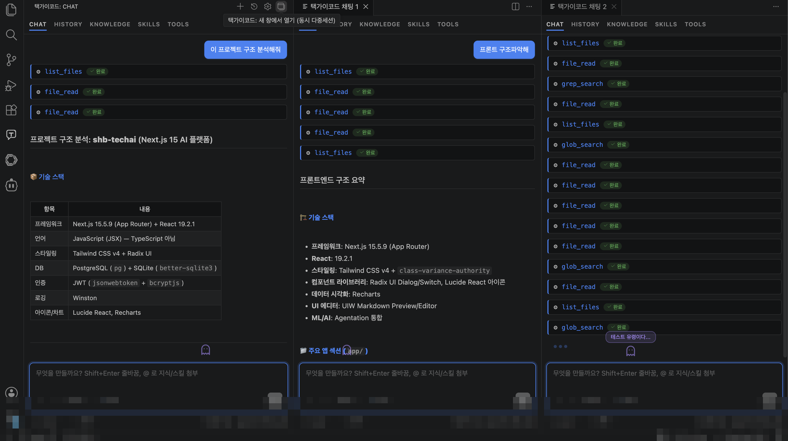
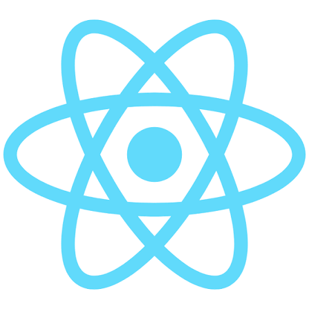
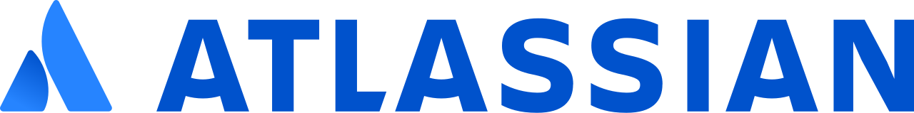
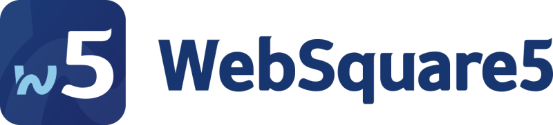

택가이코드
터미널과 VS Code에서 쓰는
사내 AI 개발 에이전트

무엇이 다른가
not a chatbot, real workspace agent코드베이스 안에서
실제로 작업하는 도구
프로젝트를 읽고 파일·Shell·git 도구를 호출하며, 수정과 검증 루프까지 이어갑니다.
- 파일 검색·읽기·수정
- Shell 명령과 git 흐름 지원
- 터미널 버전과 VS Code Extension이 같은 엔진 사용
- API Key와 로그로 관리 가능
택가이 플랫폼 구조
gateway · web · client
택가이Web은 중앙 관리 통로
SSO · usage · logging사내 SSO, 사용자 포털, 관리자 페이지와 API Key 관리까지 이어지는 실제 운영 화면입니다.

사내 스윙 SSO와 사번 기반 사용자 식별
부서별·개인별·모델별 요청/토큰 집계
요청/응답 메타데이터, 오류, 재시도 내역 확인
개인별 모델 권한과 사용량 추적 관리
택가이코드는 개발자가 실제로 쓰는 제품입니다
Terminal과 VS Code Extension, 두 제품 모두 같은 엔진을 씁니다.
프로젝트 루트에서 바로 실행. 파일·셸·git 작업과 자연스럽게 연결됩니다.
에디터 안에서 같은 엔진과 같은 도구 실행 루프를 사용합니다.
터미널/VS Code UI만 다르고 모델 권한, 로그, API Key 관리 체계는 동일합니다.
내부망에서 필요없는 기능은 걷어내고 핵심 작업 루프만 담았습니다.
핵심만 담았습니다
개발자가 실제로 쓰는 파일·검색·Shell·git·검증 루프에 집중해, 내부망에서도 빠르고 안정적으로 동작하도록 구성했습니다.
택가이코드 VS Code Extension
editor agent에디터 안에서 프로젝트 맥락을 읽고, 같은 엔진으로 파일·검색·Shell 작업을 이어갑니다.

동시 다중세션 · 멀티 작업
multi-session · parallelVS Code Extension에서 여러 세션을 한 번에 띄워 각각 독립 세션으로 동시에 다른 작업을 진행합니다.

새 창마다 독립 세션과 자체 엔진(tgc-server)으로 동시 실행
여러 세션이 파일·검색·셸 등 도구를 동시에 호출·실행
새 창은 항상 새 세션으로 시작
땡겨요 POC에서 확인한 가치

화면 파악
기존 화면과 요구사항 정리

구조 분석
React 프로젝트 흐름 파악

코드 수정
회원가입·검색·주문 플로우 구현
“복잡한 프로젝트 구조를 처음 보는 사람도 AI 도움으로 빠르게 화면과 흐름을 이해할 수 있음”
“단순 목업이 아니라 실제 업무 플로우에 맞춰 동작하는 화면 코드까지 구현”
김혜민 프로 · 땡겨요사업단 플랫폼운영 Cell
- 기획/분석: 레거시 소스 기반 문서 최적화 및 비즈니스 로직 추출 속도 향상
- 개발 생산성: React 전환 시 화면당 개발 공수(MM)의 획기적인 절감 확인
사내망 인프라의 한계를 극복하고 구축한 고성능 AI 테스트베드를 통해, React 개발 공수를 최대 87.5%까지 단축하는 압도적인 전환 생산성을 직접 증명했습니다.
실제 부서 후기와 활용 사례
택가이코드가 실제로 쓰이는 기술·환경
사내 개발 스택
ReactM신한 모바일·SOL APP·땡겨요 등 화면 개발·전환 (개발 공수 절감)
ProFrame 5 개발 — 가이드 문서 지식 참조 · ProFrame MCP 연동

사내 WikiConfluence 가이드·기술 문서 검색 및 지식 참조

WebSquare5화면 개발 — DataCollection·submission 등 거래 호출 코드 작성·오탈자 디버깅
이승민 프로
“업무 진행하면서 많은 도움이 되었습니다. 주기적인 업데이트 잘 부탁드립니다!”
노태경 프로
“최신 텍가이 버전에서 사이즈가 큰 프로젝트에서도 끊기지 않고 수행되어 너무 좋습니다.”
김지은 프로
“내부망 AI임에도 똑똑한 텍가이코드 덕분에 업무효율이 매우 늘었습니다. Vscode 텍가이 최고!”
변은서 프로
“AI Agent를 사용할 수 있게 되면서 필요한 정보를 검색하는 데에 많은 시간 단축이 되었습니다. 업무를 빨리 끝낼 수 있어 많은 도움이 되고 있습니다! 김지원프로님 행복만 하세요 ㅎㅎ”
이상헌 프로
“내부망에서 택가이 코드 덕분에 개발만이 아니라 테이블 신청서 작성과 같은 피로도 높은 문서작업에서도 큰 도움이 되었습니다. 높아진 업무효율에 앞으로 진행할 프로젝트들이 기대되며 택가이의 지속적인 업데이트 또한 기대가 됩니다.”
이현지 프로
“기획서나 보고서 초안 작성할 때 매우매우 유용하게 활용하고 있습니다. 기본 구조를 잡아주다보니, 초안 작성 시간을 줄이는 데 도움이 되고 있습니다! 특히 아이디어를 보고서 형식으로 다듬을 때 택가이가 있어서 빠르고 편리하게 작성할 수 있습니다. 앞으로도 애용할게요!”
김장원 팀장
“1 Team 1 Agent 과제 수행 중, 은행 내부망 환경에서도 AI Coding Agent가 코드 자동 생성 및 검증 과정에 실제로 활용될 수 있다는 점에 큰 놀라움을 느꼈습니다. 향후 테크그룹의 개발, 운영 프로세스 전반에 폭넓게 적용되어 조직 전반의 생산성 향상을 이끌기를 기대합니다.”
김혜민 프로
“사내망이라는 엄격한 보안 환경 안에서도 최고 수준의 AI 개발 툴을 자체적으로 테스트해 보았다는 점에서 기술적으로 매우 큰 의미가 있었습니다. 현업 및 개발 전담반(기획, 배달앱 등)에서 한 달간 적극적으로 체감해 본 결과, 생각했던 것보다 모델의 분석 및 변환 성능이 압도적으로 우수하다는 공통된 평가를 얻었습니다.”
서문교 프로
“사내 보안 정책상 외부 클라우드 API 호출이 제한돼 있었고, 실시간 AI Agent 활용이 어려운 상황이었습니다. 이를 해결하기 위해 온프레미스 서버에 Agent 시스템을 직접 배포하고 클라이언트 연결 인터페이스를 제공해주신 김지원 프로님께 감사를 표합니다. 도입 결과 단순 반복 개발건 70% 시간단축, 만족도 5점에 5점입니다.”
김예진 프로
“개발 방향성을 잡고 설계하는데 많은 도움이 되었습니다. 빈 공책에 손으로 써가면서 머릿속으로 고민하고 생각하는 시간보다 AI와 함께 답변을 도출했을 때 개발속도도 훨씬 빠르고 결과물도 더 빨리 나왔습니다. 특히 VS Code에 붙여서 기존 코드를 레퍼런스로 삼아 고칠 부분을 같이 논의하는 방식으로 개발하니 개발 편의성도 많이 올라가서 편리합니다.”
이정우 프로
“에어갭 환경에서도 고성능 모델을 사용할 수 있도록 적극적으로 반입을 추진해 주셔서 감사합니다. 뛰어난 AI 코드 어시스턴트의 도움을 받으면서 업무 생산성이 눈에 띄게 올라간 것을 매일 실감하고 있습니다. 이토록 제한된 환경에서 훌륭한 AI의 지원을 가능하게 만들어주신 택가이코드 덕분에, 야근도 많이 줄고 마침내 ‘저녁 있는 삶’을 누리게 되었습니다. 정말 감사합니다!”
나창현 팀장
“과거에는 한땀한땀 프로그램을 열어서 확인해야 했지만, 이제 택가이 코드를 활용함으로써 업무 시간을 단축하고 영향도를 쉽게 파악할 수 있게 되었습니다. 이러한 편의성을 가진 택가이코드가 더 많은 직원분들이 활용하여 업무 효율성을 높였으면 좋겠습니다. 지속적인 업데이트와 새로운 기능 추가, 성능 향상 덕분에 외부 AI를 사용하는 일도 줄어들었습니다! 앞으로 얼마나 더 발전할지 기대됩니다! 지속적인 업데이트 감사합니다~”
윤정한 프로
“복잡한 금융 데이터를 가공하고 비즈니스 로직을 반영하는데 있어서 AI를 통해 쉽게 해결했습니다. 과거 해당 로직을 반영하기 위해 몇번의 회의를 거쳐야 했으며 검증까지 2-3일이 걸릴 일을 단 1시간 만에 가공 로직을 짜주어 검증까지 완료하였습니다. 또 변경된 소스를 반영하는데 있어서 은행의 GITSOP과 연동하여 개발환경에서 형상관리를 실수 없이 자연어로 해결할 수 있었습니다. 업무 효율화와 편의성에서 과거와 비교할 수 없는 생산성이 증가하였습니다. 이게 바로 은행에서의 혁신 아닐까요?”
조범석 프로
“외부망에서 Cursor, Gemini-CLI, Antigravity 등을 써보면서 코딩의 패러다임이 완전히 변화했구나를 느끼고 있었는데 택가이가 발전하면 발전할수록 사내망에서의 코딩 패러다임도 곧 변화되겠구나 느껴집니다. 지식폴더, Tools를 활용해 좀 더 체계화돼서 개발을 하고 있고, 더 나아가 내부 관리자사이트 정도는 아예 택가이코드를 활용해볼까 생각 중입니다. 택가이코드가 있어 제 아이디어를 많이 실현시켜볼 수 있던 것 같습니다. 앞으로도 더 발전될 것이라 굳게 믿습니다. 감사합니다.”
박은수 프로
“인터넷 망에서 공부를 하며 클로드 코드를 접하였을 때 은행 개발 업무에도 접목되면 업무능률이 오르겠구나 싶었습니다. 내부망에 있는 택가이코드를 사용해보니 기본적인 문법 에러나, 완벽하진 않아도 로직 에러 등을 고치는 데 수월해졌습니다. AX 관련 업무는 빠른 PoC 개발이 필수적인데, 택가이코드는 이러한 업무에 정말 적합한 기능으로 보입니다. 택가이코드를 통해 앞으로도 행내 개발 환경 발전 가능성에 기대감을 갖게 되었습니다. 그리고 택가이코드와 같은 에이전트 시스템을 모두가 같이 사용하기 위해선 하네스와 같은 공통 제약사항을 행내에서 확립하여 조금 더 미래지향적인 개발 문화가 구축되었으면 좋겠습니다.”
정다윤 프로
“현재 함께 작업하던 프로님께서 OJT로 발령이 나서, 대체 인력 없이 혼자 업무를 진행해야 하는 상황이었으나 지원 프로님께서 웹 기반 택가이 서비스에 더해 VSCode 환경에서도 직접 연동해 주셨습니다. 덕분에 IDE 내에서 바로 파일을 불러와 오타, 로직 오류, 런타임 에러 등을 즉각 검증할 수 있게 되었고, 개발 산출물 검증 측면에서 평소 대비 업무 효율이 크게 향상되었습니다. 기존에 작성된 복잡한 쿼리나 쉘 스크립트의 주석과 코드를 빠르게 학습하여 새로운 비즈니스 로직을 설계하는 과정에서도 큰 도움을 받았습니다. 아울러 현업이나 영업점에 전달해야 할 기술적 내용을 쉽게 요약·정리해 주는 역할도 톡톡히 해내어, 운영 업무 관리에도 큰 도움이 되고 있습니다.”
이강희 프로
“폐쇄망인 은행 내부 개발망에서 이정도 AI 개발툴을 사용할 수 있다는 것이 놀라웠습니다. 외부망에서만 가능할 줄 알았던 이러한 툴을 VScode에서 Extension으로 연동하여 쓸 수 있도록 최적화 개발이 정말 잘 되어있다는 생각이 듭니다. 김지원 프로가 고생하여 추가로 다양한 기능을 업데이트 해줘서 사실상 은행 내에 Chatgpt/Claude를 쓰는 느낌이 듭니다. 인프라가 넉넉하지 않았을 텐데 주어진 인프라에서 최적의 모델을 잘 최적화하여 서빙을 한 점도 눈에 띄며 빠른 응답 속도를 제공하여 좋은 사용자 경험을 제공한 것도 감사하게 생각합니다. 덕분에 Agent 개발에 있어 많은 시간 단축이 있었고 앞으로도 꾸준히 최신 AI 기술들을 팔로우업해서 행내 개발 환경에 잘 적용 부탁드립니다! 감사합니다”
안우일 프로
“운영거래 확인을 위한 SQL 쿼리분석, 운영 이슈를 확인할 때 복잡한 쿼리문을 분석해야 하는 경우가 많은데 택가이코드를 통해 빠르고 정확하게 분석하여 문제해결을 하는데에 많은 도움을 받았습니다.”
“웹스퀘어 내 화면개발 진행 시 개발시간 단축 — 백엔드 거래를 호출하려면 DataCollection, submission 등에 대한 개발이 필요한데, 로직오류가 아닌 변수명·문자열 처리의 단순 오탈자로 정상수행이 안 되는 경우가 정말 많습니다. 이전에는 ‘이 코드가 왜 안돌아가지?’ 하며 한 줄 한 줄 다시 디버깅해야 했는데, 택가이코드에게 물어보고 10분 만에 바로 해결하여 빠르게 개발을 끝낼 수 있었습니다! 최근에도 꾸준히 업데이트되어 성능이 계속 향상되고 있는 택가이코드, 앞으로도 응원하고 기대하겠습니다.”
이광빈 프로
“택가이코드를 통해 변경 전, 후 코드를 주고 로직 에러를 1차적으로 검증할 수 있었고, 효율적인 SQL을 작성할 수 있도록 도움을 많이 받고 있습니다. 정말 감사합니다.”
김윤지 프로
“택가이코드를 활용하면서, 반복적이거나 구조적인 코드 개선 작업 등 리팩토링 작업의 편의성이 크게 향상되었고, 개발 효율성 또한 높아졌습니다. 또한 단순히 일정에 쫓겨 개발을 진행하기보다, 더 나은 설계와 구현 방향에 대해 고민하며 개발할 수 있는 환경이 만들어진 것 같아 감사하게 생각합니다! 특히 초기 설계구조를 수립하고, 아키텍처 방향성을 검토하는 과정에서 적극 활용함으로써 보다 체계적이고 효율적인 개발을 수행할 수 있게 된 거 같습니다 ㅎ.ㅎ”
처음 보는 코드베이스를 혼자 파악하는 시간을 줄이고, 사내 규칙과 코드 패턴을 안내합니다.
고객상담센터 · Data플랫폼Unit · 고객경험혁신센터
API Key, 로그, 사용량, 오류 이력으로 사내 개발 조직이 통제 가능한 AI 동료입니다.
택가이 주간 운영지표 · 6월 2주차 → 3주차
2주차 대비 3주차에 사용자·요청·토큰 사용량이 모두 큰 폭으로 증가했습니다.
6월 30일 오늘자 기준 — 개발망 980명 돌파, 운영(업무)망 460명 돌파,
1,440명+가 되었습니다.
2026년 6월 3주차 기준 (최신)
주간 5영업일 기준5영업일 기준 1,930,712,403 tokens · 총 토큰 사용량의 92%가 택가이코드에서 발생
부서별 주간 사용량 순위
그 외 투자서비스개발부·기관제휴개발부·Tech혁신Unit·DS개발팀·Tech기획부·땡겨요사업단·AI개발부·ICT Service Desk·HR부 등 사용 중 · 막대는 1위 대비
2026년 6월 2주차 기준 (직전 주)
주간 5영업일 기준5영업일 기준 914,203,456 tokens · 총 토큰 사용량의 90%가 택가이코드에서 발생
부서별 주간 사용량 순위
그 외 Tech기획부·여신서비스개발부·AI개발부 등 사용 중 · 다음 순위 5.7M+ · 막대는 1위 대비
택가이코드는 오픈소스 모델을 기반으로 구축되어 사내 내부망에서 이용가능하며,
내부망 환경에서 외부솔루션과 오픈소스보다 오히려 뛰어난 AI 코드 어시스턴트입니다.
외부업체 솔루션과 SI에 의존하지 않은 100% 자체개발 제품입니다.
외부 솔루션 대신 자체개발 — 라이선스 비용을 통째로 아꼈습니다
택가이코드는 100% 자체개발이라 사용료와, 인당 라이센스 비용이 0원입니다.
현 사용자 1,440명 기준 — 외부 온프레미스 솔루션 연 1.9억~4.4억 → 택가이코드는 라이선스 0원
1,440명 기준 연간 라이선스 비용 비교 (온프레미스 한정)
1 USD ≈ 1,540원 공개가 환산외부 온프렘 vs 택가이코드
소프트웨어 사용료만 기준 · 인프라·HW·SI·운영비 등 제외
1 USD≈1,540원 공개가 환산 · 택가이코드는 라이선스 0원